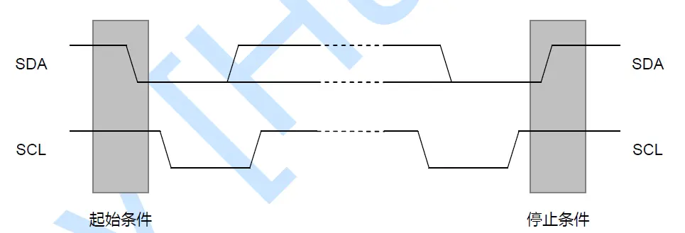
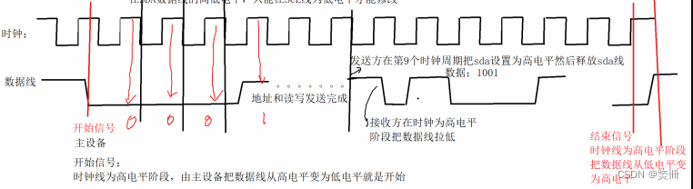
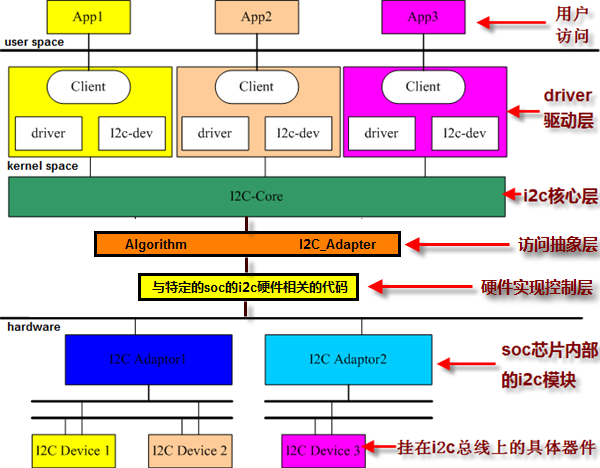

README
linux i2c子系统学习。
refers
I2C协议
i2c是一种两线式串行总线，是半双工同步通信。
I2C总线由两根信号线组成，一条是时钟信号线SCL，一条是数据信号线SDA。一条I2C总线可以接多个设备，每个设备都接入I2C总线的SCL和SDA。I2C总线是主从模式的总线架构，每个设备都可以作为主设备，其他设备作为从设备，但是同一时刻只能有一个主设备。其物理总线拓扑图如下：

总线协议：
（1）起始条件（边沿触发）：当SCL总线处于高电平时，SDA总线从高电平到低电平的跳变触发一次传输的开始条件。
（2）结束条件（边沿触发）：当SCL总线处于高电平时，SDA总线从低电平到高电平的跳变触发一次传输的结束条件。
起始和结束的时序图如下：

（3）数据传输格式：
起始条件触发之后，SCL处于高电平时，检测SDA总线的高低电平值1和0，SCL处于低电平时，SDA高低电平跳变切换数据1和0。
SDA的数据传输以8bit（一个字节）为单位，每个字节传输之后都跟随一个bit的ACK位。起始条件之后的第一个字节应该是地址字段（包含7bit的地址+1bit的R/W位），随后是8bit为单位的数据，数据可以无限制的多次发送。注意，地址字节和每个数据字节之后都跟随一个bit的ACK位。
I2C总线的数据格式如下：
I2C的传输数据时序图如下：

I2C子系统框架
Kernel中I2C总线框架分为三层：I2C总线核心层，I2C总线控制器驱动层，I2C设备驱动层。
（1）总线核心层(i2c-core)：这是I2C的核心框架层，定义了I2C核心的数据结构，提供了I2C控制器，I2C设备和驱动的注册/注销框架，并提供了设备数据传输接口。如下：
//控制器注册注销接口：
int i2c_add_adapter(struct i2c_adapter *adapter)；
void i2c_del_adapter(struct i2c_adapter *adap)；
//设备驱动注册注销接口：
int i2c_register_driver(struct module *owner, struct i2c_driver *driver)；
void i2c_del_driver(struct i2c_driver *driver)；
//数据传输接口：
int i2c_transfer(struct i2c_adapter *adap, struct i2c_msg *msgs, int num)；
int i2c_master_send(const struct i2c_client *client, const char *buf, int count)；
int i2c_master_recv(const struct i2c_client *client, char *buf, int count)；
（2）控制器驱动层(i2c-adapter)：由 i2c_adapter 结构描述了某个具体的I2C总线控制器特性，并通过 i2c_algorithm 结构提供了I2C总线周期的开始，停止，数据发送和接收等方法。同一个i2c_algorithm可以提供给多个 i2c_adapter 使用，i2c_adapter在注册的同时，会去（通过设备树配置或者老式的platform相关的硬编码）轮询该i2c总线下的所有i2c设备，并创建对应的 i2c_client 设备。换句话说，注册一个i2c_adapter，该总线下的所有从设备都会被注册到 i2c_bus_type下。
（3）设备驱动层(i2c-driver)：由 i2c_driver 结构表示，用于表示各个具体从设备的驱动，跟 i2c_client 绑定，通过 i2c_client 关联的 adapter的algorithm实现具体从设备的通信协议。 遵循kernel设备驱动框架，i2c_bus_type总线下挂 i2c_driver 和 i2c_client，注册 i2c_driver 的时候，会去轮询 i2c_bus_type 总线下的所有 i2c_client 设备，调用 bus 的 match（）方法，匹配后，调用 i2c_driver 的probe（）方法并关联该 i2c_client。在注册 i2c_adapter 同时，扫描注册该总线下所有的 i2c_client的时候，调用 bus 的match（）方法匹配 i2c_bus_type 总线下的 i2c_driver 驱动后，在调用 i2c_driver的probe（）方法并关联该 i2c_driver。

简化版：
I2C设备控制器注册
先看一下重要结构体：
i2c_adpater的核心是i2c_algorithm
i2c_algorithm的核心是master_xfer函数
struct i2c_algorithm {
/* If an adapter algorithm can't do I2C-level access, set master_xfer
to NULL. If an adapter algorithm can do SMBus access, set
smbus_xfer. If set to NULL, the SMBus protocol is simulated
using common I2C messages */
/* master_xfer should return the number of messages successfully
processed, or a negative value on error */
int (*master_xfer)(struct i2c_adapter *adap, struct i2c_msg *msgs,
int num);
int (*smbus_xfer) (struct i2c_adapter *adap, u16 addr,
unsigned short flags, char read_write,
u8 command, int size, union i2c_smbus_data *data);
/* To determine what the adapter supports */
u32 (*functionality) (struct i2c_adapter *);
#if IS_ENABLED(CONFIG_I2C_SLAVE)
int (*reg_slave)(struct i2c_client *client);
int (*unreg_slave)(struct i2c_client *client);
#endif
};
struct i2c_adapter {
struct module *owner;
unsigned int class; /* classes to allow probing for */
const struct i2c_algorithm *algo; /* the algorithm to access the bus */
void *algo_data;
/* data fields that are valid for all devices */
const struct i2c_lock_operations *lock_ops;
struct rt_mutex bus_lock;
struct rt_mutex mux_lock;
int timeout; /* in jiffies */
int retries;
struct device dev; /* the adapter device */
int nr;
char name[48];
struct completion dev_released;
struct mutex userspace_clients_lock;
struct list_head userspace_clients;
struct i2c_bus_recovery_info *bus_recovery_info;
const struct i2c_adapter_quirks *quirks;
struct irq_domain *host_notify_domain;
};
i2c_algorithm各函数释义如下：
master_xfer：这是最重要的函数，它实现了一般的I2C传输，用来传输一个或多个i2c_msg
master_xfer_atomic： 可选的函数，功能跟master_xfer一样，在atomic context环境下使用 比如在关机之前、所有中断都关闭的情况下，用来访问电源管理芯片
smbus_xfer：实现SMBus传输，如果不提供这个函数，SMBus传输会使用master_xfer来模拟
smbus_xfer_atomic： 可选的函数，功能跟smbus_xfer一样，在atomic context环境下使用 比如在关机之前、所有中断都关闭的情况下，用来访问电源管理芯片
functionality：返回所支持的flags：各类I2C_FUNC_*
reg_slave/unreg_slave： 有些I2C Adapter也可工作与Slave模式，用来实现或模拟一个I2C设备 reg_slave就是让把一个i2c_client注册到I2C Adapter，换句话说就是让这个I2C Adapter模拟该i2c_client
unreg_slave：反注册
以qcm2290为例：
dts：
scuba-qupv3.dtsi:
qupv3_se0_i2c: i2c@4a80000 {
compatible = "qcom,i2c-geni";
reg = <0x4a80000 0x4000>;
#address-cells = <1>;
#size-cells = <0>;
interrupts = <GIC_SPI 327 IRQ_TYPE_LEVEL_HIGH>;
clock-names = "se-clk", "m-ahb", "s-ahb";
clocks = <&gcc GCC_QUPV3_WRAP0_S0_CLK>,
<&gcc GCC_QUPV3_WRAP_0_M_AHB_CLK>,
<&gcc GCC_QUPV3_WRAP_0_S_AHB_CLK>;
pinctrl-names = "default", "sleep";
pinctrl-0 = <&qupv3_se0_i2c_active>;
pinctrl-1 = <&qupv3_se0_i2c_sleep>;
dmas = <&gpi_dma0 0 0 3 64 0>,
<&gpi_dma0 1 0 3 64 0>;
dma-names = "tx", "rx";
qcom,wrapper-core = <&qupv3_0>;
status = "disabled";
};
scuba-pinctrl.dtsi:
qupv3_se0_i2c_pins: qupv3_se0_i2c_pins {
qupv3_se0_i2c_active: qupv3_se0_i2c_active {
mux {
pins = "gpio0", "gpio1";
function = "qup0";
};
config {
pins = "gpio0", "gpio1";
drive-strength = <2>;
bias-pull-up;
};
};
qupv3_se0_i2c_sleep: qupv3_se0_i2c_sleep {
mux {
pins = "gpio0", "gpio1";
function = "qup0";
};
config {
pins = "gpio0", "gpio1";
drive-strength = <2>;
bias-pull-up;
};
};
};
UM.9.15/kernel/msm-4.19/drivers/i2c/busses/i2c-qcom-geni.c:核心是probe函数，它要做这几件事：
根据设备树信息设置硬件(引脚、时钟等)
分配、设置、注册i2c_apdater
#define I2C_AUTO_SUSPEND_DELAY 250
static const struct i2c_algorithm geni_i2c_algo = {
.master_xfer = geni_i2c_xfer,
.functionality = geni_i2c_func,
};
static int geni_i2c_probe(struct platform_device *pdev)
{
struct geni_i2c_dev *gi2c;
struct resource *res;
struct platform_device *wrapper_pdev;
struct device_node *wrapper_ph_node;
int ret;
gi2c = devm_kzalloc(&pdev->dev, sizeof(*gi2c), GFP_KERNEL);
if (!gi2c)
return -ENOMEM;
if (arr_idx++ < MAX_SE)
/* Debug purpose */
gi2c_dev_dbg[arr_idx] = gi2c;
gi2c->dev = &pdev->dev;
res = platform_get_resource(pdev, IORESOURCE_MEM, 0);
if (!res)
return -EINVAL;
wrapper_ph_node = of_parse_phandle(pdev->dev.of_node,
"qcom,wrapper-core", 0);
if (IS_ERR_OR_NULL(wrapper_ph_node)) {
ret = PTR_ERR(wrapper_ph_node);
dev_err(&pdev->dev, "No wrapper core defined\n");
return ret;
}
wrapper_pdev = of_find_device_by_node(wrapper_ph_node);
of_node_put(wrapper_ph_node);
if (IS_ERR_OR_NULL(wrapper_pdev)) {
ret = PTR_ERR(wrapper_pdev);
dev_err(&pdev->dev, "Cannot retrieve wrapper device\n");
return ret;
}
gi2c->wrapper_dev = &wrapper_pdev->dev;
gi2c->i2c_rsc.wrapper_dev = &wrapper_pdev->dev;
ret = geni_se_resources_init(&gi2c->i2c_rsc, I2C_CORE2X_VOTE,
(DEFAULT_SE_CLK * DEFAULT_BUS_WIDTH));
if (ret) {
dev_err(gi2c->dev, "geni_se_resources_init\n");
return ret;
}
gi2c->i2c_rsc.ctrl_dev = gi2c->dev;
gi2c->i2c_rsc.se_clk = devm_clk_get(&pdev->dev, "se-clk");
if (IS_ERR(gi2c->i2c_rsc.se_clk)) {
ret = PTR_ERR(gi2c->i2c_rsc.se_clk);
dev_err(&pdev->dev, "Err getting SE Core clk %d\n", ret);
return ret;
}
gi2c->i2c_rsc.m_ahb_clk = devm_clk_get(&pdev->dev, "m-ahb");
if (IS_ERR(gi2c->i2c_rsc.m_ahb_clk)) {
ret = PTR_ERR(gi2c->i2c_rsc.m_ahb_clk);
dev_err(&pdev->dev, "Err getting M AHB clk %d\n", ret);
return ret;
}
gi2c->i2c_rsc.s_ahb_clk = devm_clk_get(&pdev->dev, "s-ahb");
if (IS_ERR(gi2c->i2c_rsc.s_ahb_clk)) {
ret = PTR_ERR(gi2c->i2c_rsc.s_ahb_clk);
dev_err(&pdev->dev, "Err getting S AHB clk %d\n", ret);
return ret;
}
gi2c->base = devm_ioremap_resource(gi2c->dev, res);
if (IS_ERR(gi2c->base))
return PTR_ERR(gi2c->base);
gi2c->i2c_rsc.geni_pinctrl = devm_pinctrl_get(&pdev->dev);
if (IS_ERR_OR_NULL(gi2c->i2c_rsc.geni_pinctrl)) {
dev_err(&pdev->dev, "No pinctrl config specified\n");
ret = PTR_ERR(gi2c->i2c_rsc.geni_pinctrl);
return ret;
}
gi2c->i2c_rsc.geni_gpio_active =
pinctrl_lookup_state(gi2c->i2c_rsc.geni_pinctrl,
PINCTRL_DEFAULT);
if (IS_ERR_OR_NULL(gi2c->i2c_rsc.geni_gpio_active)) {
dev_err(&pdev->dev, "No default config specified\n");
ret = PTR_ERR(gi2c->i2c_rsc.geni_gpio_active);
return ret;
}
gi2c->i2c_rsc.geni_gpio_sleep =
pinctrl_lookup_state(gi2c->i2c_rsc.geni_pinctrl,
PINCTRL_SLEEP);
if (IS_ERR_OR_NULL(gi2c->i2c_rsc.geni_gpio_sleep)) {
dev_err(&pdev->dev, "No sleep config specified\n");
ret = PTR_ERR(gi2c->i2c_rsc.geni_gpio_sleep);
return ret;
}
if (of_property_read_bool(pdev->dev.of_node, "qcom,shared")) {
gi2c->is_shared = true;
dev_info(&pdev->dev, "Multi-EE usecase\n");
}
if (of_property_read_u32(pdev->dev.of_node, "qcom,clk-freq-out",
&gi2c->i2c_rsc.clk_freq_out)) {
gi2c->i2c_rsc.clk_freq_out = KHz(400);
}
dev_info(&pdev->dev, "Bus frequency is set to %dHz\n",
gi2c->i2c_rsc.clk_freq_out);
gi2c->irq = platform_get_irq(pdev, 0);
if (gi2c->irq < 0) {
dev_err(gi2c->dev, "IRQ error for i2c-geni\n");
return gi2c->irq;
}
ret = geni_i2c_clk_map_idx(gi2c);
if (ret) {
dev_err(gi2c->dev, "Invalid clk frequency %d KHz: %d\n",
gi2c->i2c_rsc.clk_freq_out, ret);
return ret;
}
ret = dma_set_mask_and_coherent(&pdev->dev, DMA_BIT_MASK(64));
if (ret) {
ret = dma_set_mask_and_coherent(&pdev->dev, DMA_BIT_MASK(32));
if (ret) {
dev_err(&pdev->dev, "could not set DMA mask\n");
return ret;
}
}
gi2c->adap.algo = &geni_i2c_algo;
init_completion(&gi2c->xfer);
platform_set_drvdata(pdev, gi2c);
ret = devm_request_irq(gi2c->dev, gi2c->irq, geni_i2c_irq,
IRQF_TRIGGER_HIGH, "i2c_geni", gi2c);
if (ret) {
dev_err(gi2c->dev, "Request_irq failed:%d: err:%d\n",
gi2c->irq, ret);
return ret;
}
disable_irq(gi2c->irq);
i2c_set_adapdata(&gi2c->adap, gi2c);
gi2c->adap.dev.parent = gi2c->dev;
gi2c->adap.dev.of_node = pdev->dev.of_node;
strlcpy(gi2c->adap.name, "Geni-I2C", sizeof(gi2c->adap.name));
pm_runtime_set_suspended(gi2c->dev);
pm_runtime_set_autosuspend_delay(gi2c->dev, I2C_AUTO_SUSPEND_DELAY);
pm_runtime_use_autosuspend(gi2c->dev);
pm_runtime_enable(gi2c->dev);
ret = i2c_add_adapter(&gi2c->adap);
if (ret) {
dev_err(gi2c->dev, "Add adapter failed\n");
return ret;
}
dev_dbg(gi2c->dev, "I2C probed\n");
return 0;
}
I2C设备驱动层匹配流程
device目前都是以dts形式呈现，如下：
&qupv3_se0_i2c {
status = "okay";
cw2017@63 {
status = "okay";
compatible = "xxx,cw2017";
reg = <0x63>;
};
};
具体匹配方式可以参考：
0028_platform_i2c_driver_probe匹配devices及调用流程.md
I2C总线核心层API调用实例
驱动用的是smbus协议，兼容i2c，用i2c_smbus_read_i2c_block_data接口比用i2c接口简单高效。但是smbus最大的clock频率为100KHz，而i2c可以支持400KHz或2MHz。
smbus可参考之前写的，这个平台貌似也没定义该协议：
0022_I2C驱动编程SMBUS介绍.md
i2c_core_smbbus.cqcom并没有注册adapter->algo->smbus_xfer接口，所以根据释义还是调用的dapter->algo->master_xfer:
s32 __i2c_smbus_xfer(struct i2c_adapter *adapter, u16 addr,
unsigned short flags, char read_write,
u8 command, int protocol, union i2c_smbus_data *data)
{
if (adapter->algo->smbus_xfer) {
/* Retry automatically on arbitration loss */
orig_jiffies = jiffies;
for (res = 0, try = 0; try <= adapter->retries; try++) {
res = adapter->algo->smbus_xfer(adapter, addr, flags,
read_write, command,
protocol, data);
if (res != -EAGAIN)
break;
if (time_after(jiffies,
orig_jiffies + adapter->timeout))
break;
}
if (res != -EOPNOTSUPP || !adapter->algo->master_xfer)//:EOPNOTSUPP: Operation not supported
goto trace;
/*
* Fall back to i2c_smbus_xfer_emulated if the adapter doesn't
* implement native support for the SMBus operation.
*/
}
}
驱动实例如下：
#include <linux/i2c.h>
struct batt_info {
struct i2c_client *i2c_client;
}
/*Define CW2017 iic read function*/
static int cw_read(unsigned char reg, unsigned char buf[])
{
struct i2c_client *client = g_batt_info->i2c_client;
int try_cnt = 3;
int ret = 0;
mutex_lock(&g_batt_info->lock);
while (--try_cnt > 0) {
ret = i2c_smbus_read_i2c_block_data( client, reg, 1, buf);
if (ret < 0) {
cw2017_set_i2c_fault_status();
ret = -1;
BAT_MONITOR_ERR("read reg: %x failed\n", reg);
}
else {
cw2017_reset_i2c_fault_cnt();
ret = 0;
break;
}
}
mutex_unlock(&g_batt_info->lock);
return ret;
}
/*Define CW2017 iic write function*/
static int cw_write(unsigned char reg, unsigned char const buf[])
{
struct i2c_client *client = g_batt_info->i2c_client;
int try_cnt = 3;
int ret = 0;
mutex_lock(&g_batt_info->lock);
while (--try_cnt > 0) {
ret = i2c_smbus_write_i2c_block_data( client, reg, 1, &buf[0] );
if (ret < 0) {
cw2017_set_i2c_fault_status();
ret = -1;
BAT_MONITOR_ERR("write reg: %x failed\n", reg);
}
else {
cw2017_reset_i2c_fault_cnt();
ret = 0;
break;
}
}
mutex_unlock(&g_batt_info->lock);
return ret;
}
static int cw2017_i2c_probe(struct i2c_client *client, const struct i2c_device_id *id)
{
int ret = 0;
int loop = 0;
struct batt_info *batt_info;
dev_t c_devno;
struct device *dev;
struct cdev *c_dev;
struct class *bat_class;
pr_err("cw2017_i2c_probe enter\n");
batt_info = devm_kzalloc(&client->dev, sizeof(struct batt_info), GFP_KERNEL);;
if (!batt_info) {
BAT_MONITOR_ERR("kzmalloc batt info failed.\n");
ret = -ENOMEM;
goto out;
}
g_batt_info = batt_info;
g_batt_info->i2c_client = client;
}
static const struct of_device_id cw2017_match_table[] = {
{.compatible = "xxx,cw2017",},
{ },
};
static const struct i2c_device_id cw2017_i2c_id[] = {
{CW2017_DEVICE_NAME, 0},
{ },
};
static struct i2c_driver cw2017_i2c_driver = {
.driver = {
.name = CW2017_DEVICE_NAME,
.owner = THIS_MODULE,
.of_match_table = cw2017_match_table,
},
.probe = cw2017_i2c_probe,
.remove = cw2017_i2c_remove,
.id_table = cw2017_i2c_id,
};
static int __init cw2017_init(void)
{
int ret = 0;
pr_err("enter\n");
ret = i2c_add_driver(&cw2017_i2c_driver);
return ret;
}
module_init(cw2017_init);